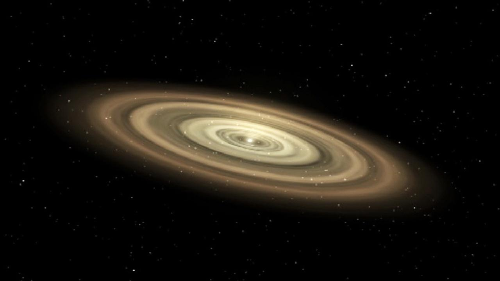

What is the solar system and how was it formed?
What is the solar system?
The sun, eight planets (including Pluto, which is a dwarf planet), and satellites make up the solar system. The inner solar system is made up of the sun, Mercury, Venus, Earth, and Mars, whereas the outer solar system is made up of Jupiter, Saturn, Uranus, and Neptune. Between Mars and Jupiter’s orbits is where the asteroid belt lies. Asteroids, comets, dust, tiny planets, and gases are among the other objects that can be found in space. The sun is the largest star in the solar system, located at the centre of the system, around which all the eight planets revolve. Planets rotate in their own axes and follow their own orbits around the sun. The rotation of the planets in their own axes causes the change of day and night, and the revolution causes the change of seasons throughout the year. Research about the universe is still a vast ongoing process, but different scientists and researchers have come to various conclusions about the solar system. It has been found that the solar system lies in the Milky Way Galaxy. The Milky Way galaxy got its name from the Romans, who thought the earth’s nighttime skyline looked like a band and a patch of milk. As per our little knowledge, we know that there are about 500 solar systems in the universe, but later, there might be some additions. As per scientists and astronomers, the earth is the only planetary body where life can exist, but this can be proven wrong after more research and discoveries about the universe.
How was the solar system formed?
The Solar System originated at least 4.568 billion years ago from the gravitational collapse of a portion of a vast molecular cloud. This cloud, which was likely several light-years in size, likely gave rise to multiple stars. Like most molecular clouds, it was primarily composed of hydrogen, along with some helium and trace amounts of heavier elements produced by earlier generations of stars. As the pre-solar nebula collapsed, it rotated more rapidly due to the conservation of angular momentum. The center, where most of the mass accumulated, heated up significantly compared to the surrounding areas. This rapid spinning led to the formation of a protoplanetary disc, approximately 200 AU in diameter, with a hot, dense protostar at its center. Planets formed through the process of accretion within this disc, where dust and gas were drawn together by gravity, gradually merging into larger bodies. Initially, there may have been hundreds of protoplanets in the early Solar System, but most either merged, were destroyed, or ejected, ultimately resulting in the current planets, dwarf planets, and remaining minor discs. Within 50 million years, the pressure and density of hydrogen in the center of the protostar became sufficient to initiate thermonuclear fusion. As helium built up in the core, the Sun's brightness increased; during its early main-sequence phase, it was only 70% as bright as it is now. The temperature, reaction rates, pressure, and density escalated until hydrostatic equilibrium was reached, balancing thermal pressure against gravitational force. At this stage, the Sun officially became a main-sequence star. The solar wind generated by the Sun formed the heliosphere, clearing away remaining gas and dust from the protoplanetary disc into interstellar space. In the inner Solar System, only metals and silicates could remain solid due to their higher boiling points, leading to the formation of the rocky planets: Mercury, Venus, Earth, and Mars. However, the limited amount of these materials meant that the terrestrial planets could not grow very large. In contrast, the giant planets—Jupiter, Saturn, Uranus, and Neptune—formed beyond the frost line, where temperatures were low enough for volatile icy compounds to remain solid. The abundance of ices allowed these planets to grow significantly larger, enabling them to capture substantial atmospheres of hydrogen and helium, the lightest and most abundant elements. Residual material that did not form into planets accumulated in regions like the asteroid belt, Kuiper belt, and Oort cloud. After the protoplanetary disc dissipated, the Nice model suggests that gravitational interactions between planetesimals and gas giants resulted in the migration of these giants into various orbits. This caused the entire system to become dynamically unstable, leading to scattering events.
